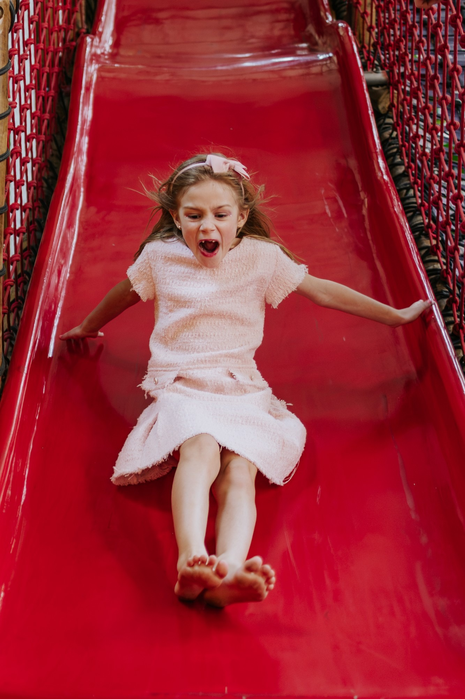
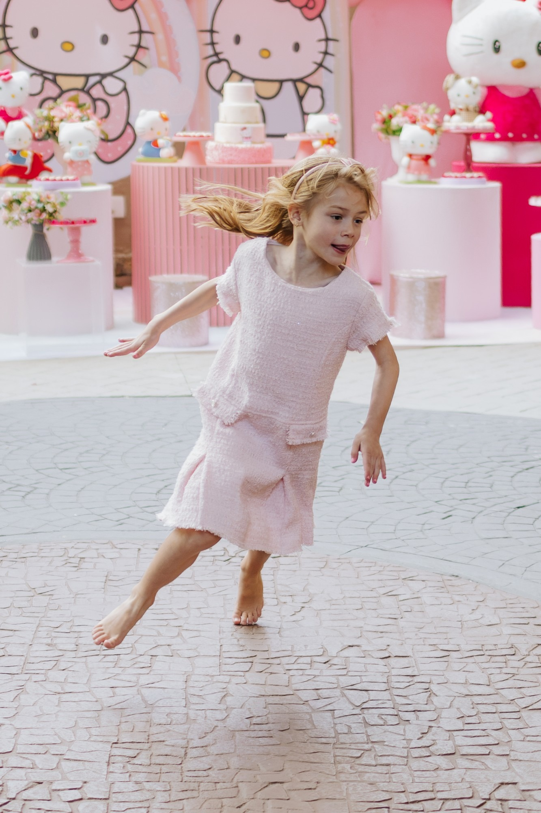
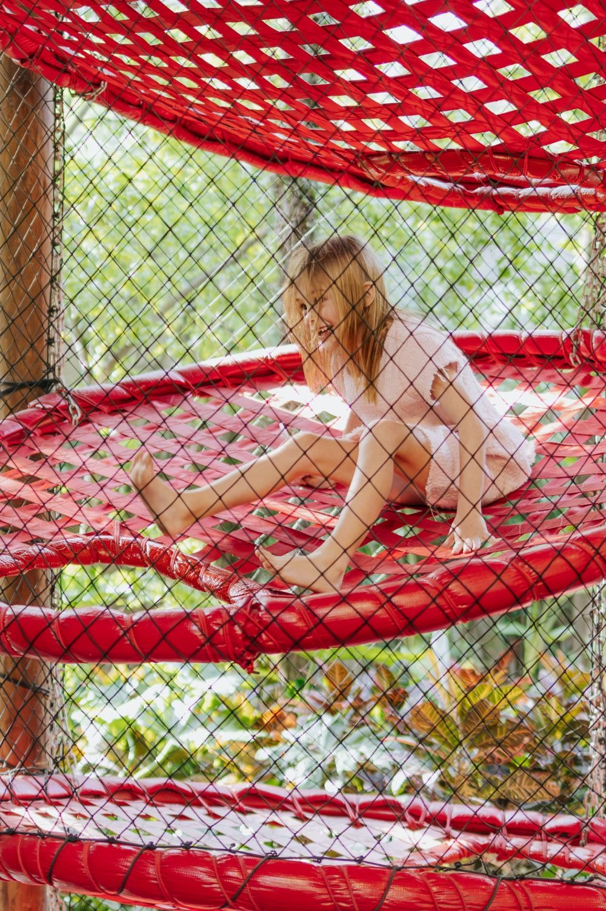
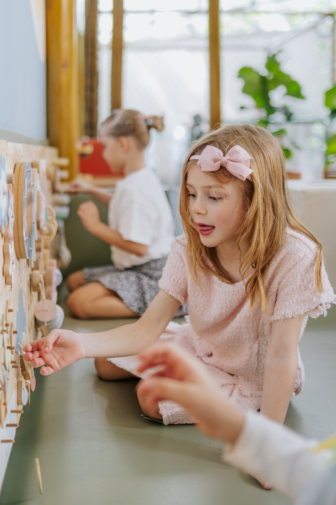
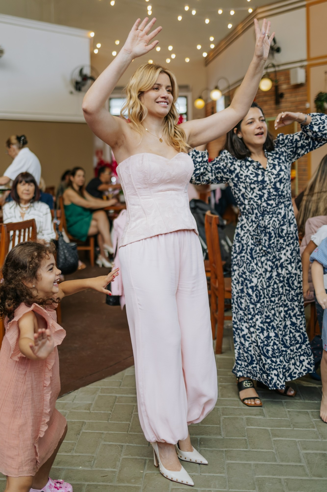
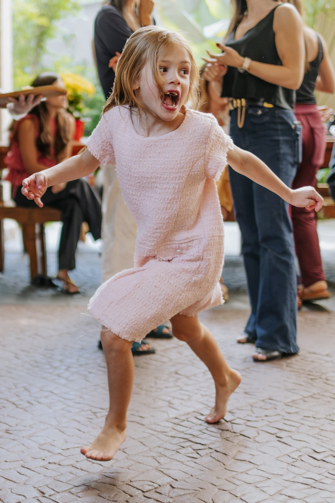
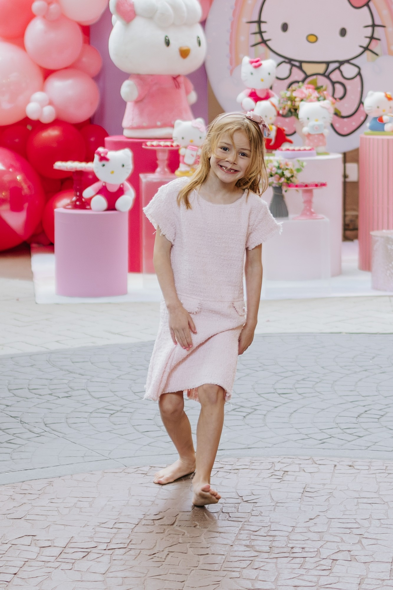
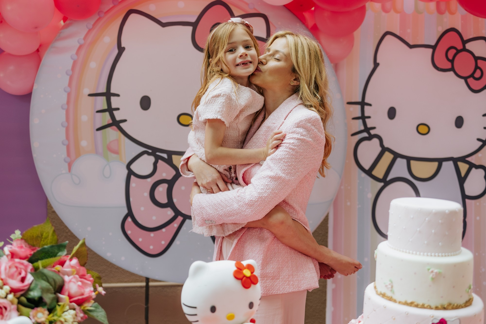

A melhor reclamação que uma mãe pode me mandar:
Camila
acabei não tirando nenhuma com o meu celular
A melhor reclamação que uma mãe pode me mandar:
Camila
acabei não tirando nenhuma com o meu celular








André Vitor · Fotografia
@andrevitor.fotografia